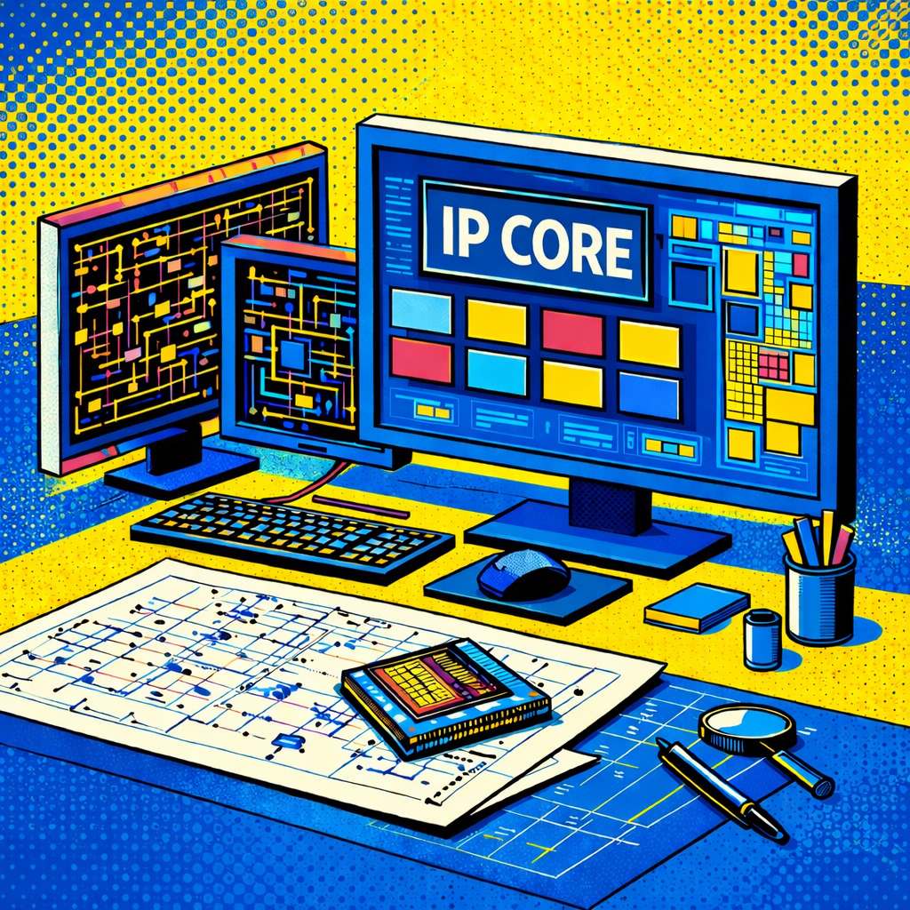

Scroll to explore
The Global Semiconductor Supply Chain
The making of a chip, across the world
Semiconductors, or chips, sit at the center of modern life. Every computer, phone, home appliance, medical device, or electric vehicle depends on them. Yet the path from raw materials to a finished chip is one of the most intricate global supply chains ever created. Dozens of countries contribute, thousands of steps unfold in cleanrooms, and a single defect can ruin an entire batch.
This scroll-through page introduces you to the technical backbone of chipmaking—from design, to fabrication, to assembly and testing. As you move through each segment, you'll see how different regions of the world specialize in different parts of this chain, what are the companies that play important roles, and why no single country can make an advanced chip entirely on its own.
Stages in the Semiconductor Supply Chain
There are three main stages of the semiconductor value chain: design, manufacturing (wafer fabrication), and assembly, test, and packaging (ATP). Each of these stages depends on specific inputs. Both the processes and their inputs rely heavily on R&D and are knowledge-intensive. This is reflected in the semiconductor industry having some of the highest R&D expenditure ratios of any industry. Such a capital- and innovation-intensive structure, in turn, contributes to highly concentrated markets dominated by “giant” firms with disproportionate resources and access to leading-edge technologies.

Design1. First Stage: Design
Semiconductor design is the upstream stage where a chip’s architecture is defined to meet specific performance, power, and cost objectives. This work is highly knowledge-intensive and depends on specialized engineering talent, advanced design software (EDA tools), and access to reusable intellectual property blocks (IP cores).
The process starts with defining the chip’s purpose, such as mobile processor, AI accelerator, automotive controller, etc.
Then, using high-end EDA tools, which are advanced softwares for designing highly complex circuits, engineers create architectural blueprints including logic blocks, memory layout, power management, and interconnects. During this process, third-party IP cores are often integrated to speed development. These IP cores are pre-designed circuit blocks with specific functionality such as patented CPU designs and GPU blocks.

Two Business Models: Fabless vs IDM
Not all companies design chips in the same way. The semiconductor industry is split into two major models — Fabless and IDM (Integrated Device Manufacturer) — each shaping global supply chains differently.
Many of today’s most recognizable semiconductor giants do not manufacture their own chips. They follow a fabless model: they focus exclusively on design and rely on specialized manufacturers to build their chips. They also often spend an extensive amount of revenue on R&D.
On the other side are IDMs, companies that handle the entire process from design and fabrication to assembly and testing. These firms control their own factories and supply chains, giving them greater independence but much higher costs.
Global IC (Integrated Circuits) Design Revenue Share (2021)
The United States dominates the global IC design landscape, capturing 43% of total revenue that spans electronic design automation (EDA), semiconductor intellectual property (IP), and professional design services. Although there are no publicly available newer data, the US share is known to have only been growing in recent years.
South Korea followed with 21%, reflecting the strength of its major chip champions. Taiwan accounted for 8%, supported by its vibrant fabless ecosystem, while both China (7%) and Japan (7.4%) held meaningful but smaller shares in the design segment. The remaining 13.5% was distributed across the rest of the world.
* Does not capture the design value created and used solely within the same firm (e.g., IDM companies that own their own IP).
Source: CSIS, 2021
Key US Fabless Companies
Some of the key American fabless companies include AMD, Broadcom, NVIDIA, Qualcomm, and Marvell Technology. Most of them are headquartered in California’s Silicon Valley.
Source: https://companiesmarketcap.com/semiconductors/largest-semiconductor-companies-by-market-cap/
Key US EDA & IP Companies
Key American EDA & IP companies are Synopsys and Cadence, taking 31% and 30% of market share each.
Source: companiesmarketcap.com
Key US IDM Companies
Key American IDM companies include Intel, Micron Technology, Texas Instruments, and Analog Devices. Unlike fabless firms clustered in coastal tech hubs, American IDMs are scattered across states like Oregon, Arizona, Texas, Idaho, and Utah. Their fabs and packaging sites demand enormous physical space, consistent utilities, and specialized zoning.
Key Asian Semiconductor Design-related Companies
Asia has become a major force in semiconductor design, especially in consumer electronics, AI accelerators, and imaging technology.
Leading IDMs include Samsung and SK Hynix in South Korea, while prominent fabless designers such as MediaTek in Taiwan and Cambricon Technologies in China are expanding rapidly.
Key European Semiconductor Design-related Companies
Europe plays a quieter yet strategically pivotal role in the global semiconductor ecosystem. While the region does not dominate advanced logic fabrication, it commands significant influence in high-value segments of the value chain, especially in IP cores, EDA tools, and specialized integrated device manufacturing (IDMs). European IDMs are particularly competitive in sectors like automotive semiconductors, industrial electronics, and power semiconductors, which are areas increasingly central to electrification, digitalization, and the green transition.
Key companies illustrate this strength: Arm Holdings in the United Kingdom remains foundational to global processor architecture through its IP licensing model; Siemens (via Siemens EDA) is a major force in electronic design tools; and leading IDMs such as NXP Semiconductors (Netherlands), Infineon Technologies (Germany), and STMicroelectronics (Switzerland).
2. Manufacturing (Wafer Fabrication)
Manufacturing, or wafer fabrication, is the stage where chip designs are physically imprinted on silicon wafers through a sequence of highly controlled processes. These include photolithography to pattern circuits, deposition (layering) and etching (carving) to build transistor layers, and doping (modifying) to control electrical properties.
Fabrication requires extreme precision, advanced equipment, and cleanroom environments, because these chips operate in nanometers—roughly 0.0001% the width of a human hair! At this microscopic scale, even the slightest vibration, a single speck of dust, or a minor chemical imbalance can ruin the entire batch, leading to lower yields (fewer working chips per wafer).
This results in very high capital costs and long investment horizons. Process complexity increases sharply at advanced technology nodes, driving industry concentration and limiting the number of firms capable of leading-edge production.
Manufacturing Inputs & Equipment
This stage requires an intense concentration of highly specialized inputs. On the materials side, ultra-pure silicon wafers provide the physical substrate, while photoresists, wet chemicals, CMP (Chemical Mechanical Planarization) slurries, and rare gases like neon and argon enable the precise layering, etching, and polishing of microscopic circuits. At the same time, advanced equipment—especially multi-million-dollar extreme ultraviolet (EUV) lithography machines, deposition tools, etching systems, and metrology instruments—translates digital chip designs into physical structures at the nanometer scale.

2 Business Models: Pure-Play Foundry and IDM
In the manufacturing stage, companies generally follow one of two business models: Integrated Device Manufacturer (IDM) or Pure-Play Foundry.
Pure-play foundries like TSMC act as "manufacturers-for-hire," focusing exclusively on the fabrication of chips for "fabless" companies (like NVIDIA or Apple) that do not own their own production facilities. In contrast, IDMs, such as Intel or Samsung, are vertically integrated firms that handle the entire lifecycle of a chip, covering design, manufacturing, and selling their own branded products using their own factories.
The choice between these models often depends on the type of chip being produced:
- IDM for Memory Chips: Standardized components like DRAM and NAND memory chips are mainly manufactured by IDMs. Because memory chip is a high-volume commodity, owning the factory allows companies to optimize the manufacturing process specifically for their designs to maximize efficiency and profit margins.
- Foundries for Logic and AI Chips: Conversely, high-performance smartphone systems and AI-related chips are mostly produced by pure-play foundries. These advanced chips require the most cutting-edge technology nodes (the smallest nanometer scales), which are so expensive to maintain that only a few dedicated foundries can justify the cost by serving many different customers at once.
Advanced Process Foundry Capacity by region
Advanced semiconductor processes, typically referring to chips produced at nodes below about 7 nanometers, represent the technological frontier of the semiconductor industry. In 2024, production of these leading-edge chips remains highly concentrated geographically. Taiwan dominates the sector with 66% of global advanced process capacity, followed by South Korea (11%), the United States (10%), and China (9%), while Japan and Europe currently hold no significant share.
Advanced-node chips are used in the most performance-intensive digital technologies today. They power AI accelerators and data-center processors, smartphone system-on-chips (SoCs), high-performance computing processors, and gaming GPUs and consoles. As demand for artificial intelligence, cloud computing, and advanced consumer electronics continues to grow, control over these advanced processes has become a central strategic and economic asset in the global semiconductor supply chain.
Source: Trendforce, 2024
Mature Process Foundry Capacity by region
Mature semiconductor processes generally refer to chips produced at nodes larger than about 7 nanometers (≥7 nm). They form around 60% of the global electronics industry and emphasize reliability, cost efficiency, and large-scale production. Taiwan still holds the largest share at 42%, followed by China with 33%, South Korea with 9%, and smaller shares from the United States (4%), Japan (3%), and other regions.
These mature-node chips are widely used in automotive electronics, industrial machines, home appliances, power management chips, and microcontrollers embedded in devices such as washing machines, medical equipment, and smart sensors. Demand for mature-node semiconductors remains extremely large, making them another crucial pillar of the global semiconductor ecosystem.
*In some industry and policy discussions, mature nodes are defined more conservatively as ≥16 nm, but for simplicity, this analysis groups all processes above 7 nm into the mature category.
Source: Trendforce, 2024
Overview of the World’s Top 50+ Semiconductor Companies
Source: companiesmarketcap.com